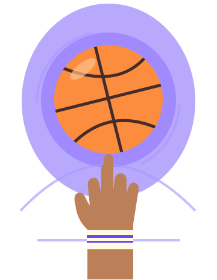
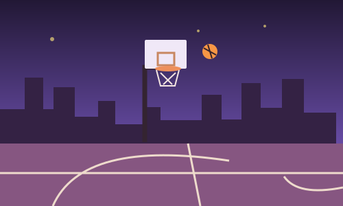
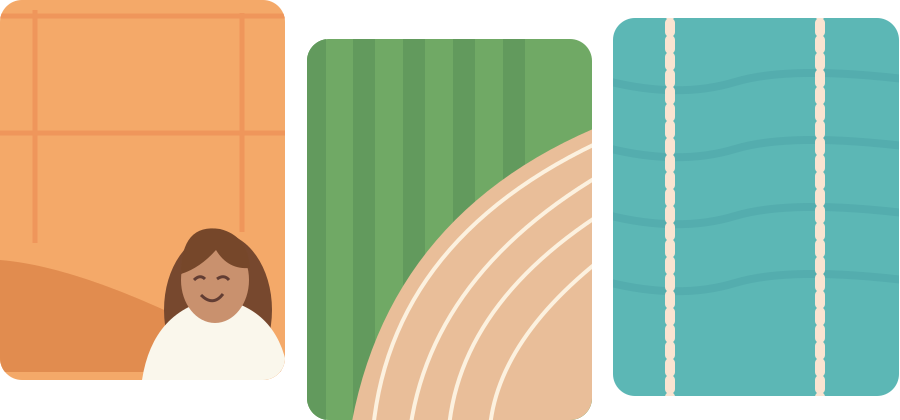

بازی سهنفره
تیم کوچک، بازی سریع و یک حلقه برای همه.

بسکتبال و استریتبال برای همه؛ از زمین محله و بازی سهنفره تا لیگ سالن و تمرین نوجوانان.
ثبتنام تیم
تیم کوچک، بازی سریع و یک حلقه برای همه.
مسابقههای گروهی روی زمین کامل.
تمرین کار تیمی، دریبل و شوت با مربی.

برای بازیهای آزاد عضویت باشگاهی لازم نیست؛ ردهٔ هر رویداد را ببین.
برنامهٔ جایگزین هر رویداد با مسئول ثبتنام هماهنگ میشود.
جام نوجوانان و مسابقهٔ آزاد فهرستهای جدا دارند. سن بازیکن را در درخواست بنویس.
نام تیم، ردهٔ سنی و بازی دلخواه را مشخص کن و فایل درخواست را بردار.
این نقشه بخشی از نمونهٔ طراحی است. هنگام راهاندازی، نشانی و موقعیت واقعی اینجا قرار میگیرد.